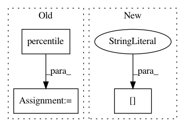

d9aec7b8c8424e4392320358dfd30b25b13f992a,innvestigate/tools/perturbate.py,Perturbation,compute_perturbation_mask,#Any#Any#,68
Before Change
@staticmethod
def compute_perturbation_mask(aggregated_regions, ratio):
// Get indices and values
thresholds = np.percentile(aggregated_regions, math.ceil(100.0 * (1.0 - ratio)), axis=(1, 2, 3), keepdims=True)
perturbation_mask_regions = aggregated_regions >= thresholds
return perturbation_mask_regions
After Change
@staticmethod
def compute_perturbation_mask(aggregated_regions, num_perturbated_regions):
// 0 means highest scoring region
order = np.argsort(-aggregated_regions.reshape((*aggregated_regions.shape[:2], -1)), axis=-1)
ranks = order.argsort().reshape(aggregated_regions.shape)
perturbation_mask_regions = ranks <= num_perturbated_regions - 1
return perturbation_mask_regions
In pattern: SUPERPATTERN
Frequency: 4
Non-data size: 3
Instances
Project Name: albermax/innvestigate
Commit Name: d9aec7b8c8424e4392320358dfd30b25b13f992a
Time: 2018-10-21
Author: philipp.seegerer@tu-berlin.de
File Name: innvestigate/tools/perturbate.py
Class Name: Perturbation
Method Name: compute_perturbation_mask
Project Name: albermax/innvestigate
Commit Name: 2b42c95e4fa7c4d4e61cdf4f64655efb7667b757
Time: 2018-10-11
Author: philipp.seegerer@tu-berlin.de
File Name: innvestigate/tools/perturbate.py
Class Name: Perturbation
Method Name: compute_perturbation_mask
Project Name: nipy/dipy
Commit Name: 0b2f543554238d6696862652c3d60dd94f68c7e6
Time: 2013-08-06
Author: garyfallidis@gmail.com
File Name: dipy/segment/mask.py
Class Name:
Method Name: hist_mask
Project Name: nipy/dipy
Commit Name: bf8cfdcf196fcce9c6ba50c570257a2bde5c687f
Time: 2013-08-06
Author: garyfallidis@gmail.com
File Name: dipy/segment/mask.py
Class Name:
Method Name: hist_mask